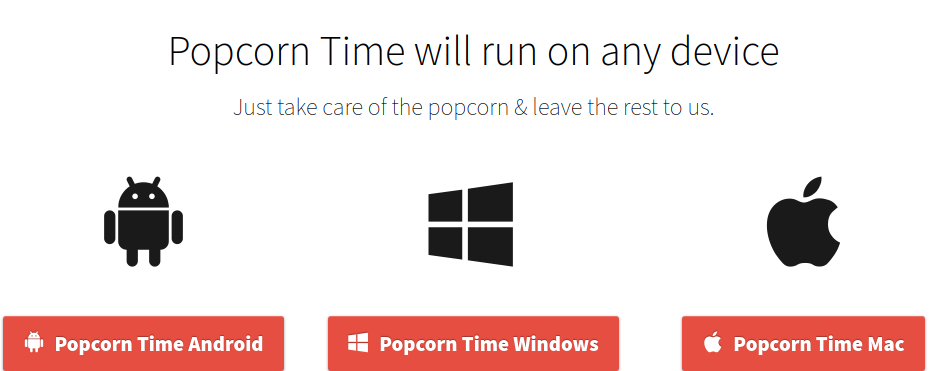

Documentação arquitetural para o PopCorn
Autores
Este documento foi produzido por João Henrique Dos Santos Soares.
- Matrícula: 118210761
- Contato: joao.soares@ccc.ufcg.edu.br
- Projeto documentado: PopCorn-Desktop
Descrição Arquitetural – popcorn-desktop

Este documento descreve a arquitetura do serviço popcorn-desktop. As descrições e diagramas aqui presentes foram produzidos usando como base o modelo C4. É importante destacar que não será apresentada toda a documentação da arquitetura do PopCorn.O foco aqui será apresentar a descrição arquitetural do serviço de desktop disponibilizado pelo PopCorn
Descrição Geral sobre o Popcorn-Desktop
É um programa desktop que tem como objetivo a propagação de filmes e séries assim como a Netflix, porém tanto o seu download quanto o seu conteúdo é gratuito, e o melhor de tudo diferentemente do Netflix, o conteúdo do Popcorn é praticamente infinito.
- É Multiplataforma;

Objetivo Geral
A implementação desse serviço permite que o usuaria assista filmes ou series com o streaming de torrents de forma gratuita.
Objetivos Específicos
O serviço do Popcorn Time tem como objetivo ser uma alternativa gratuita para serviços de vídeo sob demanda em assinatura, como o Netflix, Amazon Prime Video , Disnay Plus e etc.

Contexto
É necessário baixar o instalador do popcorn e abrir o arquivo de instalação. Depois deste processo, pode começar a usar o sistema. O contexto do sistema se resume ao usuário conseguir acessar o serviço de streaming, navegar por sua galeria e conseguir assistir.
- O usuário instala o aplicativo em seu computador
- O sistema consegue trocar informações com o armazenamento de dados para criar ou fazer login.
- O usuário tem acesso ao sistema
- O sistema busca as informações dos streamings de vídeos e criar uma galeria para o usuário escolher
- A plataforma consegue disponibilizar os Streaming de vídeos

Containers
O sistema popcorn pode ser dividida basicamente em três containers:
- Sistema Desktop : foi implementado usando a linguagem JavaScript. O Sistema consegue entregar o conteúdo estático da aplicação.
- Streaming : foi implementado usando a linguagem JavaScript. Tem como responsabilidade permitir que os usuários consigam reproduzir os arquivos de vídeos.
- API Application : foi implementado usando a linguagem JavaScript e NodeJs. Tem a responsabilidade de fornecer funcionalidades e a lógica de negócio para o sistema.

Componentes
- Gerenciador de usuário : Responsável pelo CRUD de usuários
- Autenticação : Responsável por verificar se o token é válido do usuário e ter um controle de acesso dos usuários.
- Gerenciador de Streaming: É responsável por controlar o fluxo de Streaming. Esse componente faz uma conexão com um sistema externo via p2p então ele consegue organizar o download do torrent de forma sequencial para que o usuário consiga assistir de forma fluida.Enquanto o filme é assistido o componente salva o arquivo em memória usando o NEDB

Código
Nesta etapa não faremos diagramas que apresentam detalhes da implementação. Faremos isso mais adiante.
Visão de Informação
O objetivo do do popcorn é reduzir o tempo de espera para assistir a filmes baixados pela internet por meio do streaming a partir de torrents de fontes confiáveis. A visão de informação a seguir retrata o fluxo de um usuário para o consumo de uma streaming.
O usuário faz a autenticação no sistema é aprovado e prossegue para a catálogo onde consegue visualizar todos os filmes/séries disponíveis.O usuário seleciona um filme/série e tem a possibilidade de assistir ao fim o usuário pode assistir novamente o streaming ou voltar ao catálogo.